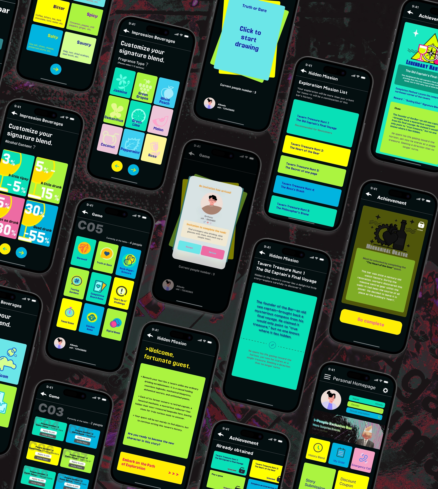
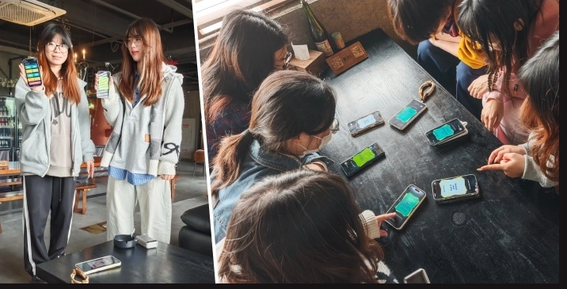
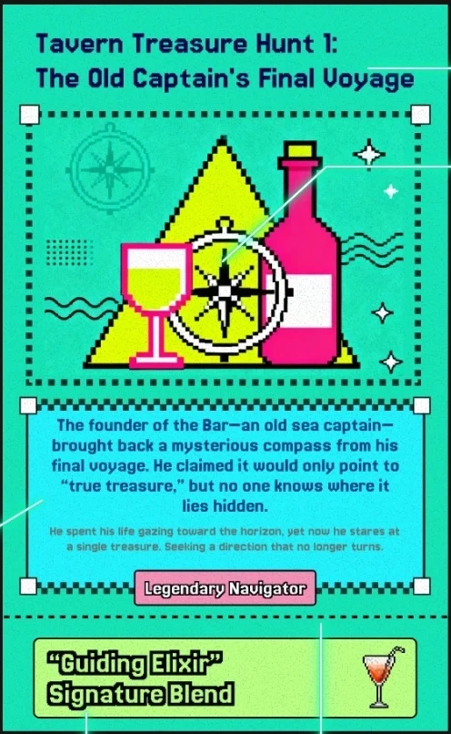
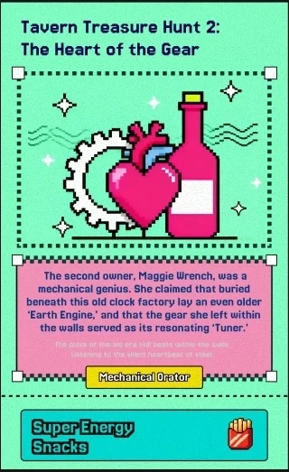
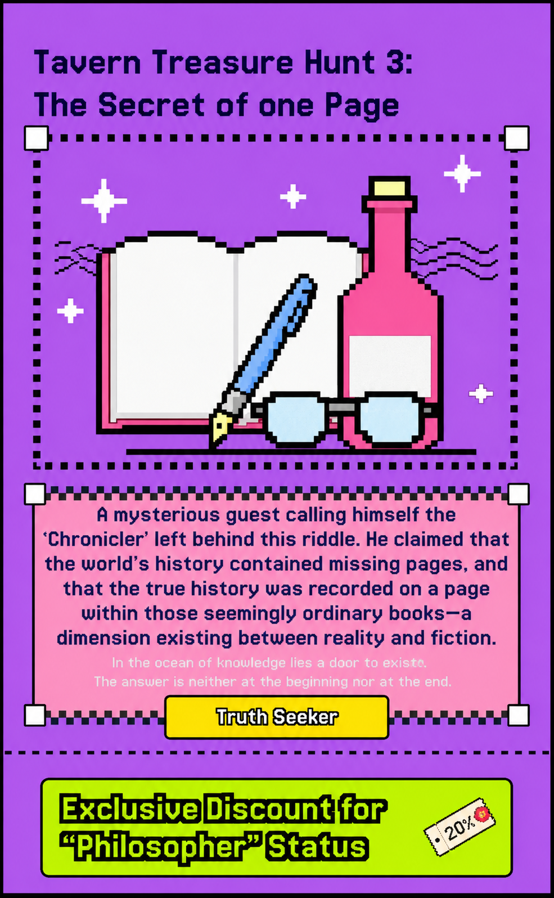
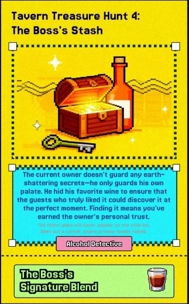
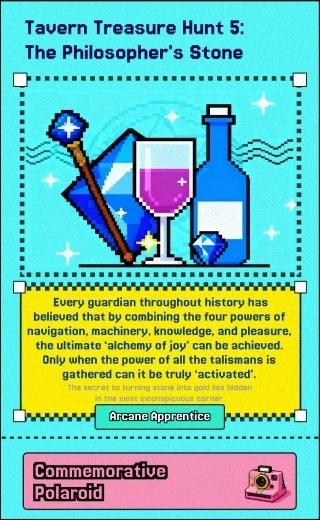
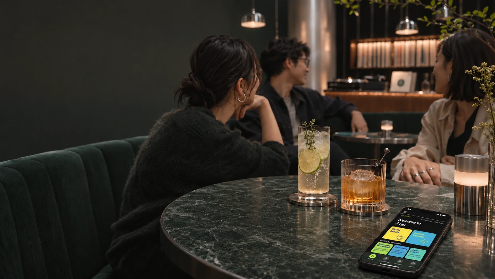
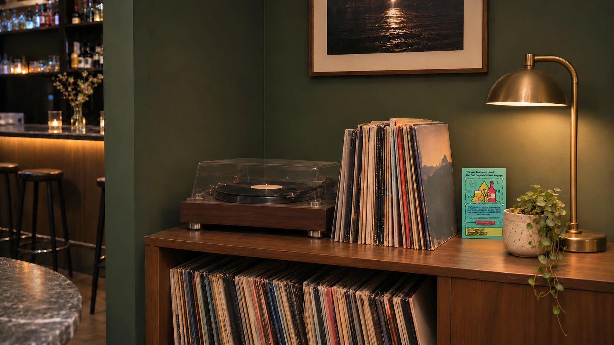
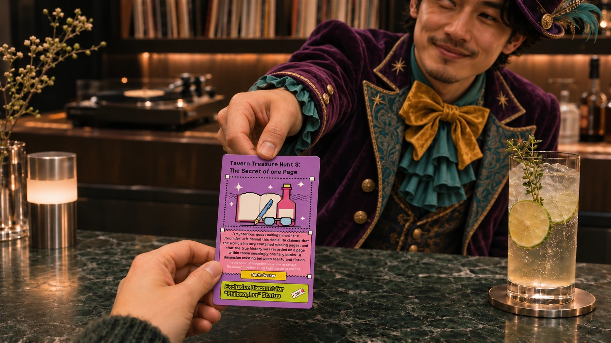

INN-TROVERT / UX & SERVICE DESIGN
Company,
on your terms.
A night out should leave room for the way you feel. A bar experience that connects people without rushing them.
Step inside ↓
01 / BEFORE THE FIRST HELLO
You set the pace.
Being in a social space does not mean being available to everyone. Preferences make the guest’s boundaries visible before an invitation arrives.
A little quiet
Room to enjoy the evening alone.
Open to a little
An invitation, with the freedom to pass.
Ready to join in
A shared activity makes the first step easier.
02 / A DRINK IN YOUR OWN WORDS
No need to know
the right words.
Familiar preferences carry the conversation to the bartender. The four steps turn an unfamiliar menu into choices the guest can describe.
03 / A SHARED GAME COMES FIRST
Something to do.
Someone to meet.
Choose a game, invite another table, or keep playing with your own group. Participation stays optional.

04 / TAKE THE STORY OFF THE SCREEN
Five stories you can hold.
A clue on the phone leads to a physical card in the bar. Staff connect the two by redeeming the reward.






One service, across the app, the room and the people in it. Informed by field observation, 68 survey responses and paper testing with 3 participants.
A story to find.
A story to share.
A clue on the phone leads into the room. Hidden cards and small exchanges with staff give the evening another way to unfold.


AI-generated service concept scenes
An independent UX and service design concept for participating at a comfortable pace.